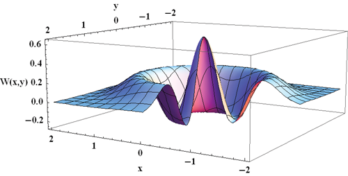
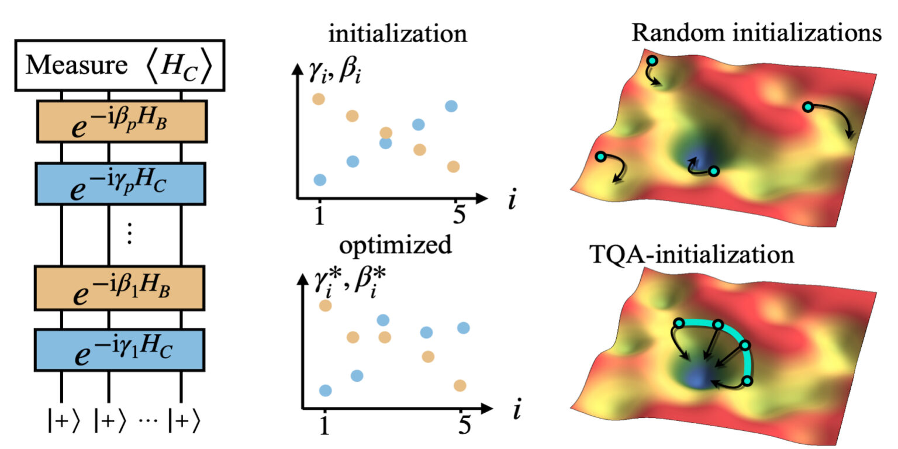
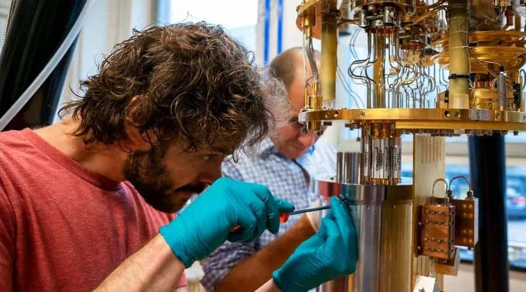
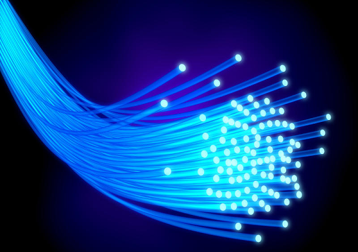
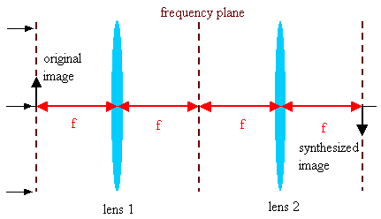
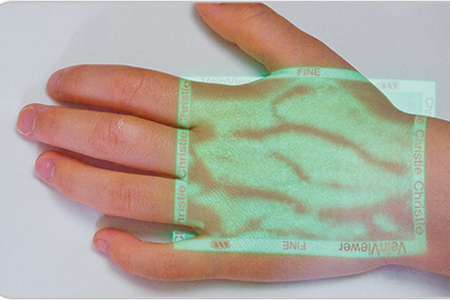
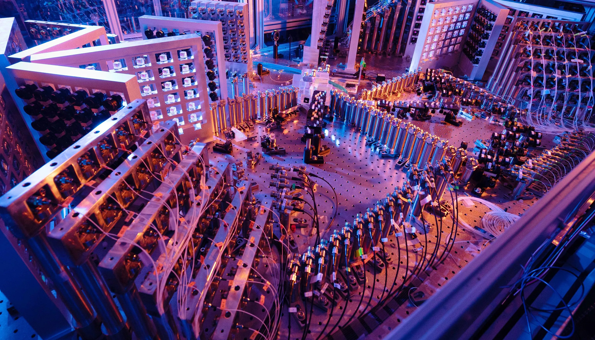

Calculatoarele cuantice sunt considerate a fi următorul mare pas în evoluția tehnologiei informației, fiind capabile să efectueze calcule cuantic mult mai rapid decât calculatoarele tradiționale. Această putere de procesare este posibilă datorită faptului că calculatoarele cuantice utilizează particule cuantice, numite qubiți, pentru a efectua calcule.
Deși calculatoarele cuantice sunt încă în stadii incipiente de dezvoltare, există deja câteva aplicații actuale și potențiale ale acestora:
Criptografia cuantică: Criptografia este unul dintre cele mai importante domenii de utilizare a calculatoarelor cuantice. Criptografia cuantică utilizează proprietățile cuantice ale particulelor pentru a crea coduri de securitate neinfractibile și pentru a proteja informațiile în timpul transmiterii. Aceasta poate fi utilizată în comunicațiile guvernamentale, militare și comerciale.
Simularea sistemelor cuantice: Calculatoarele cuantice sunt de asemenea utile în simularea sistemelor cuantice, cum ar fi reacțiile chimice și fenomenele fizice la scară atomică. Simularea sistemelor cuantice poate fi utilizată în dezvoltarea de noi medicamente, noi materiale și în cercetarea în domeniul fizicii.

Inteligența artificială: Inteligența artificială este un alt domeniu de utilizare a calculatoarelor cuantice, deoarece acestea pot fi utilizate pentru a accelera procesul de învățare a mașinilor. Algoritmi de învățare cuantică ar putea fi utilizați pentru a optimiza motoarele de căutare, pentru a ajuta la dezvoltarea de noi modele de învățare și pentru a face posibile aplicații precum recunoașterea vocală și recunoașterea facială.
Optimizarea: Calculatoarele cuantice pot fi utilizate pentru a efectua optimizări în diverse domenii, cum ar fi optimizarea rutei pentru transport, optimizarea producției de energie și optimizarea portofoliului.

Cercetare în domeniul științei: Calculatoarele cuantice pot fi utilizate pentru a efectua calcule extrem de complexe în domenii precum astrofizica, biologia moleculară și medicina.

Deși calculatoarele cuantice sunt încă în faza de dezvoltare și implementare, acestea prezintă un mare potențial pentru a schimba modul în care efectuăm calcule și pentru a accelera progresele în domenii precum criptografia, inteligența artificială și cercetarea în știință.
Photonic Computing
Calculatoarele fotonice sunt o tehnologie emergentă care utilizează fotoni în loc de electroni pentru a transmite și procesa informația. Această tehnologie are un potențial mare în ceea ce privește puterea de procesare, viteza și eficiența energetică, dar și în alte domenii. Iată câteva exemple de aplicații actuale și potențiale ale calculatoarele fotonice:
Comunicații optice: Calculatoarele fotonice pot fi utilizate pentru a îmbunătăți comunicațiile optice, prin utilizarea unor semnale de lumină pentru a transmite date la viteze foarte mari. Aceasta poate duce la o creștere semnificativă a capacității de transmisie a datelor și la îmbunătățirea conectivității globale.

Procesare optică: Calculatoarele fotonice pot efectua calcule complexe în timp real, utilizând proprietățile luminii. Acestea pot fi utilizate în domenii precum modelarea și simularea sistemelor complexe, precum și în procesarea de semnale în timp real.

Inteligența artificială: Calculatoarele fotonice pot fi utilizate în dezvoltarea de algoritmi de învățare automată, precum și în accelerarea proceselor de învățare prin utilizarea tehnologiilor de procesare optică.
Medicină și biotehnologie: Calculatoarele fotonice pot fi utilizate în dezvoltarea de noi tehnologii medicale și biotehnologice, precum imagistica optică avansată, terapia cu lumină și diagnosticarea non-invazivă.

Calculatoarele cuantic-optice: Calculatoarele fotonice pot fi utilizate în dezvoltarea de calculatoare cuantic-optice, care utilizează atât fotoni, cât și qubiți pentru a efectua calcule cuantice. Acestea ar putea fi utilizate pentru a accelera procesele de calcul cuantice și pentru a dezvolta noi aplicații în domeniul criptografiei cuantice și a simulărilor cuantice.

În concluzie, calculatoarele fotonice au un mare potențial în diverse domenii, inclusiv comunicații, procesare optică, medicină și biotehnologie, și calculatoare cuantic-optice.